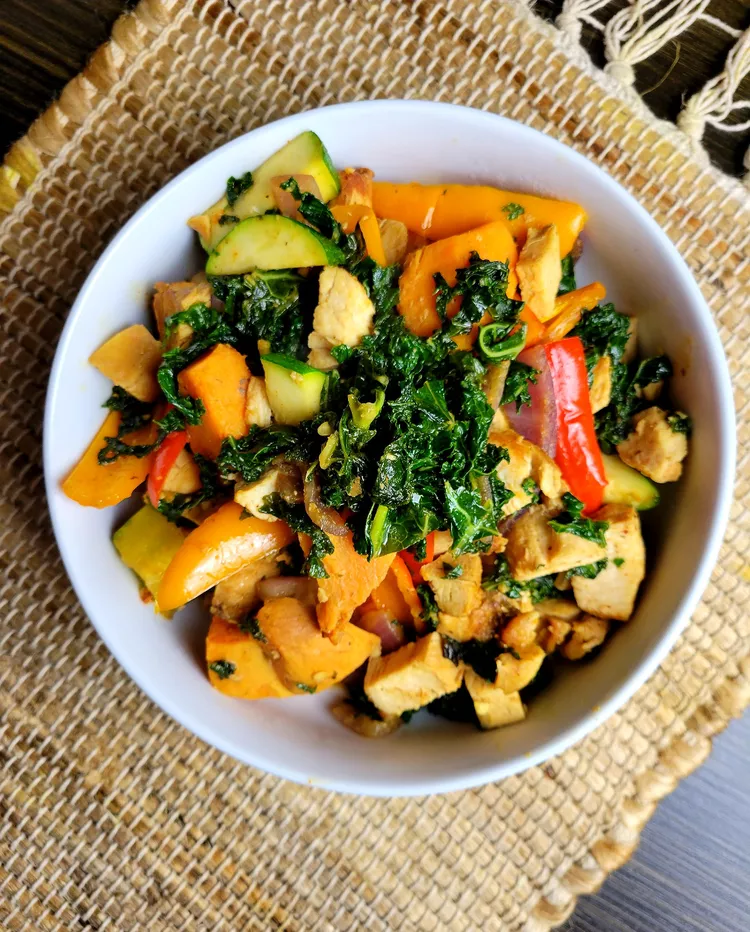

"Kale & Chicken Stir-Fry"

Home
Kale and Chicken Stir-Fry
This is a quick and easy recipe, perfect for a weekday meal. There is lots of
room in this recipe to add whatever vegetables you like to make it your own.
Serve alone or with rice.
Ingredients
- 2 (8 ounce) boneless, skinless chicken breasts
- salt and freshly ground black pepper
- 1 sweet potato
- 1 sweet potato
- 2 tablespoons sesame oil
- 1 bunch chopped kale
- 4 mini bell peppers, halved lengthwise and seeded
- ½ medium red onion, cut into bite-size pieces
- ½ zucchini, sliced
- 3 cloves garlic, chopped
- 2 tablespoons peanut sauce
Steps
- Lightly season chicken breasts on both sides with salt and pepper.
- Heat a cast iron skillet over medium heat and pan-fry chicken until
it is no longer pink in the center and the juices run clear, turning
occasionally, about 10 minutes. An instant-read thermometer inserted
into the center should read at least 165 degrees F (74 degrees C). Remove
from skillet, allow to cool, and cut into bite-sized pieces.
- Meanwhile, pierce sweet potato with a fork a few times and microwave until
fork-tender, 2 to 3 minutes. Be careful not to overcook. Remove and allow
to cool; then cut into bite-sized pieces.
- Heat oil in a wok, Dutch oven, or heavy skillet over medium heat. Add kale,
season with salt and pepper, and cook until wilted, 3 to 5 minutes. Add sweet
potato, mini peppers, onion, zucchini, and garlic. Stir-fry for 3 to 5 minutes.
Add chicken and peanut sauce. Stir all ingredients together until well combined.
Cook and stir for 3 minutes.